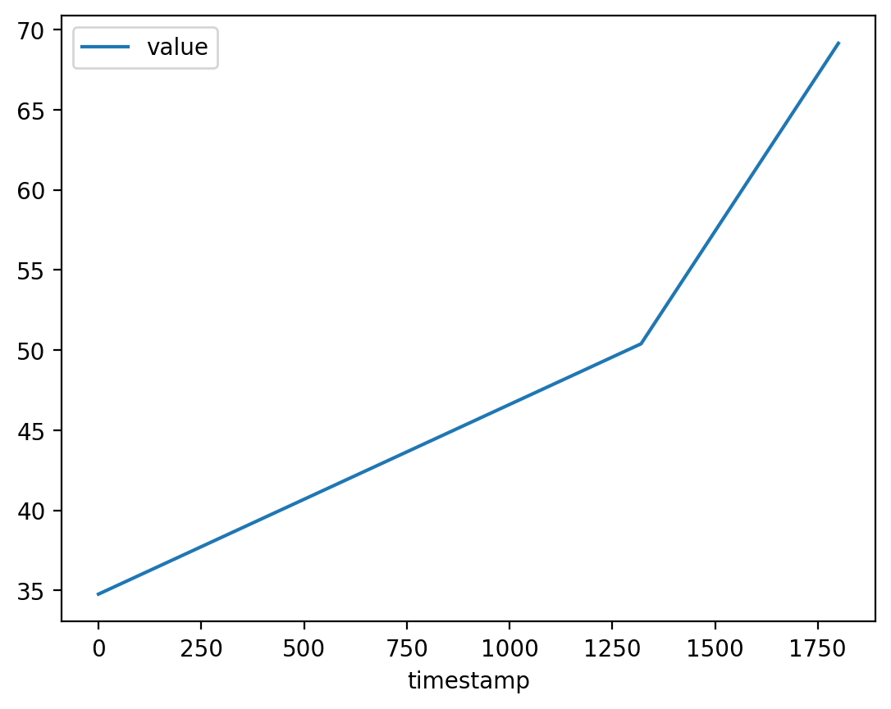

import boto3
import sagemaker
import pandas as pd
import numpy as np
import botocore
config = botocore.config.Config(user_agent_extra='dlai-pds/c2/w2')
# low-level service client of the boto3 session
sm = boto3.client(service_name='sagemaker',
config=config)
sm_runtime = boto3.client('sagemaker-runtime',
config=config)
sess = sagemaker.Session(sagemaker_client=sm,
sagemaker_runtime_client=sm_runtime)
bucket = sess.default_bucket()
role = sagemaker.get_execution_role()
region = sess.boto_region_name0.1 Introduction
In the previous article we performed Feature Engineering on a raw dataset of product text reviews using AWS Sagemaker, preparing it for training the model. Now we will train a text classifier using a variant of BERT called RoBERTa - a Robustly Optimized BERT Pretraining Approach - within a PyTorch model ran as a SageMaker Training Job.
Let’s review the Amazon SageMaker “Bring Your Own Script” scheme:

In this project we will cover each part of this scheme. First, we need to install and import the required modules:
import matplotlib.pyplot as plt
%matplotlib inline
%config InlineBackend.figure_format='retina'1 AWS Built-in algorithms vs Pre-Trained Models
Training an NLP model from scratch can be a very time-consuming and expensive. For example, training the BERT models 110 or 340 million parameters from scratch could take multiple days, depending on the CPU or GPU resources you have available. Luckily, there are many pretrained models available, which you can use to simply adapt them to your use case and your data set.
Lets also highlight the differences between AWS built-in algorithms and pretrained models. In earlier articles, we looked at how to use built-in AWS algorithms, for example, the blazing text algorithm, to quickly train a model.
The built-in algorithm all required code to train the text classifier. We just pointed the algorithm to the prepared training data. In this project, we will work with pretrained models. The main difference here is that the model has already been trained on large collections of text data. For example, wikipedia text data.
We looked at pre-trained deep learning models previously as the Fastai deep learning library provides these by default.
With pre-trained models there are usually 2 steps:
- Model pre-training: a task to help the model understand language better e.g. to predict the next word in a sequence
- Model fine-tuning: the main task at hand, where we use the pre-trained model that already understands language well and then customise that for a task e.g. classify text for sentiment

This helps improve the speed and performance of training a deep learning model by using a pre-training step, as opposed to say training a deep learning text classifier from scratch. This concept is also known as transfer learning.
Here using AWS we will provide specific text data, the product reviews data, to adapt a pre-trained model to our text domain and also provide the task and model training code. We wll be telling the pretrained model to perform a text classification task, with the three sentiment classes supplied.
2 Pre-Trained BERT and Roberta Models
While you can use BERT as is without training from scratch, it’s useful to understand how BERT uses word masking and next sentence prediction in parallel to learn and understand language. As BERT sees new text, the model masks 15 percent of the words in each sentence. BERT then predicts the masked words and corrects itself, meaning it updates the model weights when it predicts incorrectly.
This step is called masked language model or masked LM. Masking forces the model to learn the surrounding words for each sentence. At the same time, BERT is masking and predicting words, or to be more precise, input tokens. It is also performing next sentence prediction, or NSP, on pairs of input sequences.

To perform NSP, BERT randomly chooses 50 percent of the sentence pairs and replaces one of the two sentences with a random sentence from another part of the document. BERT then predicts if the two sentences are a valid sentence pair or not. BERT again will correct itself when it predicts incorrectly. Both of those training tasks are performed in parallel to create a single accuracy score for the combined training efforts.
This results in a more robust model capable of performing word and sentence level predictive tasks. The input data is large collections of unlabeled text.

Since BERT has already been pre-trained on millions of public documents from Wikipedia and the Google Books corpus, the vocabulary and learned representations are indeed transferable to a large number of NLP and NLU tasks across a wide variety of domains.
In the fine-tuning step, you also configure the model for the actual NLP task, such as question and answer, text classification, or a named entity recognition. Fine-tuning is implemented as supervised learning and no masking or next sentence prediction happens. As a result, fine-tuning is very fast and requires a relatively small number of samples or product reviews, in our case.
The RoBERTa model architecture builds on BERT’s language masking strategy, but removes the next sentence pre-training objective. It also trains with much larger mini-batches and learning rates and with a 160 gigabyte of text, RoBERTa also uses much more training data compared to BERT, which is pre-trained with 16 gigabytes of text data.

These model architecture changes focus on building an even better performing masked language model for the NLP downstream tasks, such as text classification.
3 Configure dataset, hyper-parameters and evaluation metrics
3.1 Configure dataset
We have already transformed and balanced the data into a format that the model expects. Let’s copy this data to S3. We will be using training and validation datasets to train the model. The test dataset will be used for tuning later.
Let’s setup the paths:
processed_train_data_s3_uri = 's3://{}/data/sentiment-train/'.format(bucket)
processed_validation_data_s3_uri = 's3://{}/data/sentiment-validation/'.format(bucket)Upload the data to S3 bucket:
!aws s3 cp --recursive ./data/sentiment-train $processed_train_data_s3_uri
!aws s3 cp --recursive ./data/sentiment-validation $processed_validation_data_s3_uriupload: data/sentiment-train/part-algo-1-womens_clothing_ecommerce_reviews.tsv to s3://sagemaker-us-east-1-215290792315/data/sentiment-train/part-algo-1-womens_clothing_ecommerce_reviews.tsv
upload: data/sentiment-validation/part-algo-1-womens_clothing_ecommerce_reviews.tsv to s3://sagemaker-us-east-1-215290792315/data/sentiment-validation/part-algo-1-womens_clothing_ecommerce_reviews.tsvCheck the existence of those files in the S3 bucket:
!aws s3 ls --recursive $processed_train_data_s3_uri2023-02-11 11:21:43 4894416 data/sentiment-train/part-algo-1-womens_clothing_ecommerce_reviews.tsv!aws s3 ls --recursive $processed_validation_data_s3_uri2023-02-11 11:21:44 276522 data/sentiment-validation/part-algo-1-womens_clothing_ecommerce_reviews.tsvWe need to setup the input data channels, wrapping the S3 locations in a TrainingInput object to use with the SageMaker Training Job. This can be organized as a dictionary where training and validation data are the Amazon SageMaker channels for S3 input data sources.
Let’s create a train data channel.
s3_input_train_data = sagemaker.inputs.TrainingInput(
s3_data=processed_train_data_s3_uri
)Now create a validation data channel.
s3_input_validation_data = sagemaker.inputs.TrainingInput(
s3_data=processed_validation_data_s3_uri
)Organize the data channels defined above as a dictionary.
data_channels = {
'train': s3_input_train_data,
'validation': s3_input_validation_data
}3.2 Configure model hyper-parameters
Now we need to set the Training Job parameters including the instance type, instance count, learning rate, batch size etc. For the purposes of this project, we will use a relatively small instance type. Please refer to this link for additional instance types that may work for your use cases.
max_seq_length=128 # maximum number of input tokens passed to BERT model
freeze_bert_layer=False # specifies the depth of training within the network
epochs=3
learning_rate=2e-5
train_batch_size=256
train_steps_per_epoch=50
validation_batch_size=256
validation_steps_per_epoch=50
seed=42
run_validation=True
train_instance_count=1
train_instance_type='ml.c5.9xlarge'
train_volume_size=256
input_mode='File'Some of them will be passed into the PyTorch estimator in the hyperparameters argument. Let’s setup the dictionary for that:
hyperparameters={
'max_seq_length': max_seq_length,
'freeze_bert_layer': freeze_bert_layer,
'epochs': epochs,
'learning_rate': learning_rate,
'train_batch_size': train_batch_size,
'train_steps_per_epoch': train_steps_per_epoch,
'validation_batch_size': validation_batch_size,
'validation_steps_per_epoch': validation_steps_per_epoch,
'seed': seed,
'run_validation': run_validation
}3.3 Setup evaluation metrics
We will choose loss and accuracy as the evaluation metrics. The regular expressions Regex will capture the values of metrics that the algorithm will emit.
metric_definitions = [
{'Name': 'validation:loss', 'Regex': 'val_loss: ([0-9.]+)'},
{'Name': 'validation:accuracy', 'Regex': 'val_acc: ([0-9.]+)'},
]For example, these sample log lines…
[step: 100] val_loss: 0.76 - val_acc: 70.92%…will produce the following metrics in CloudWatch:
validation:loss = 0.76
validation:accuracy = 70.92

3.4 Setup Debugger and Profiler
Amazon SageMaker Debugger can be used to profile machine learning models, helping to identify and fix training issues caused by hardware resource usage. Setting some parameters in the SageMaker estimator, without any change to the training code, can enable the collection of infrastructure and model metrics such as: CPU and GPU, RAM and GPU RAM, data loading time, time spent in ML operators running on CPU and GPU, distributed training metrics and many more.
In addition, we can visualize how much time is spent in different phases, such as preprocessing, training loop, and postprocessing. If needed, you can drill down on each training epoch, and even on each function in your training script.
You can define Debugger Rules as are described here: https://docs.aws.amazon.com/sagemaker/latest/dg/debugger-built-in-rules.html
from sagemaker.debugger import Rule, ProfilerRule, rule_configs
from sagemaker.debugger import DebuggerHookConfig
from sagemaker.debugger import ProfilerConfig, FrameworkProfileDebuggerHookConfig provides options to customize how debugging information is emitted and saved. s3_output_path argument value defines the location in Amazon S3 to store the output.
debugger_hook_config = DebuggerHookConfig(
s3_output_path='s3://{}'.format(bucket),
)ProfilerConfig sets the configuration for collecting system and framework metrics of SageMaker Training Jobs. Parameter system_monitor_interval_millis sets the time interval to collect system metrics (in milliseconds). Parameter framework_profile_params is the object for framework metrics profiling. Here we will set its local path, the step at which to start profiling, start_step, and the number of steps to profile, num_steps.
from sagemaker.debugger import ProfilerConfig, FrameworkProfile
profiler_config = ProfilerConfig(
system_monitor_interval_millis=500,
framework_profile_params=FrameworkProfile(local_path="/opt/ml/output/profiler/", start_step=5, num_steps=10)
)For monitoring and profiling the built-in rules we can use the ProfilerReport. It creates a profiling report and updates when the individual rules are triggered. If you trigger this ProfilerReport rule without any customized parameter as in the cell below, then the ProfilerReport rule triggers all of the built-in rules for monitoring and profiling with their default parameter values.
The profiling report can be downloaded while the Training Job is running or after the job has finished.
rules=[ProfilerRule.sagemaker(rule_configs.ProfilerReport())]4 Train model
4.1 Setup the RoBERTa and PyTorch script to run on SageMaker
We will prepare the PyTorch model to run as a SageMaker Training Job in a separate Python file, which will be called during the training.
Here we will be using the pre-trained model roberta-base. The information about the available models can be found in the Hugging Face website.
import sys, importlib
sys.path.append('src/')
import train
# reload the module if it has been previously loaded
if 'train' in sys.modules:
importlib.reload(train)
# Ignore warnings below
config = train.configure_model()
label_0 = config.id2label[0]
label_1 = config.id2label[1]
label_2 = config.id2label[2]
updated_correctly = False
if label_0 != -1 or label_1 != 0 or label_2 != 1:
print('#######################################################################################')
print('Check that the function \'configure_model\' in the file src/train.py is complete.')
print('########################################################################################')
raise Exception('Check that the function \'configure_model\' in the file src/train.py is complete.')
else:
print('##################')
print('Updated correctly!')
print('##################')
updated_correctly = True
##################
Updated correctly!
##################Setup the PyTorch estimator to train our model. For more information on the PyTorch estimator, see the documentation here.
from sagemaker.pytorch import PyTorch as PyTorchEstimator
if updated_correctly:
estimator = PyTorchEstimator(
entry_point='train.py',
source_dir='src',
role=role,
instance_count=train_instance_count,
instance_type=train_instance_type,
volume_size=train_volume_size,
py_version='py3', # dynamically retrieves the correct training image (Python 3)
framework_version='1.6.0', # dynamically retrieves the correct training image (PyTorch)
hyperparameters=hyperparameters,
metric_definitions=metric_definitions,
input_mode=input_mode,
debugger_hook_config=debugger_hook_config,
profiler_config=profiler_config,
rules=rules
)Lets now launch the SageMaker Training Job which will be fitting the model to the dataset. We can use the estimator.fit function, passing the configured train and validation inputs (data channels).
estimator.fit(
inputs=data_channels,
wait=False
)We can refer to the last Training Job using the estimator function latest_training_job. Then the Training Job name can be found with the name function:
training_job_name = estimator.latest_training_job.name
print('Training Job name: {}'.format(training_job_name))Training Job name: pytorch-training-2023-02-11-11-22-02-024We can also load the information about the Training Job using the function describe(). The result is in dictionary format. Let’s check that it has the same Training Job name:
training_job_name = estimator.latest_training_job.describe()['TrainingJobName']
print('Training Job name: {}'.format(training_job_name))Training Job name: pytorch-training-2023-02-11-11-22-02-024Let’s pull the Training Job status from the Training Job description.
print(estimator.latest_training_job.describe().keys())dict_keys(['TrainingJobName', 'TrainingJobArn', 'TrainingJobStatus', 'SecondaryStatus', 'HyperParameters', 'AlgorithmSpecification', 'RoleArn', 'InputDataConfig', 'OutputDataConfig', 'ResourceConfig', 'StoppingCondition', 'CreationTime', 'LastModifiedTime', 'SecondaryStatusTransitions', 'EnableNetworkIsolation', 'EnableInterContainerTrafficEncryption', 'EnableManagedSpotTraining', 'DebugHookConfig', 'ProfilerConfig', 'ProfilerRuleConfigurations', 'ProfilerRuleEvaluationStatuses', 'ProfilingStatus', 'ResponseMetadata'])training_job_status_primary = estimator.latest_training_job.describe()['TrainingJobStatus']
print('Training Job status: {}'.format(training_job_status_primary))Training Job status: InProgressWait for the Training Job to complete.
%%time
estimator.latest_training_job.wait(logs=False)
2023-02-11 11:44:39 Starting - Preparing the instances for training
2023-02-11 11:44:39 Downloading - Downloading input data
2023-02-11 11:44:39 Training - Training image download completed. Training in progress.....................................................................................................................................................................................................................
2023-02-11 12:02:56 Uploading - Uploading generated training model....................................
2023-02-11 12:06:06 Completed - Training job completed
CPU times: user 1.19 s, sys: 131 ms, total: 1.32 s
Wall time: 21min 9sReview the training metrics.
df_metrics = estimator.training_job_analytics.dataframe()
df_metrics| timestamp | metric_name | value | |
|---|---|---|---|
| 0 | 0.0 | validation:loss | 1.10 |
| 1 | 1320.0 | validation:loss | 1.02 |
| 2 | 1800.0 | validation:loss | 0.66 |
| 3 | 0.0 | validation:accuracy | 34.77 |
| 4 | 1320.0 | validation:accuracy | 50.39 |
| 5 | 1800.0 | validation:accuracy | 69.14 |
We can query and plot the training metrics:
df_metrics.query("metric_name=='validation:accuracy'").plot(x='timestamp', y='value')<matplotlib.axes._subplots.AxesSubplot at 0x7f40865b1a90>
4.2 Download SageMaker debugger profiling report
We can download and review the debugger profiling report.
profiler_report_s3_uri = "s3://{}/{}/rule-output/ProfilerReport/profiler-output".format(bucket, training_job_name)Then we can list the report files:
!aws s3 ls $profiler_report_s3_uri/ PRE profiler-reports/
2023-02-11 12:03:09 364394 profiler-report.html
2023-02-11 12:03:08 211444 profiler-report.ipynbThe folder profiler-reports contains the built-in rule analysis components, stored in JSON and a Jupyter notebook. They are aggregated into the report.
!aws s3 cp --recursive $profiler_report_s3_uri ./profiler_report/download: s3://sagemaker-us-east-1-215290792315/pytorch-training-2023-02-11-11-22-02-024/rule-output/ProfilerReport/profiler-output/profiler-reports/CPUBottleneck.json to profiler_report/profiler-reports/CPUBottleneck.json
download: s3://sagemaker-us-east-1-215290792315/pytorch-training-2023-02-11-11-22-02-024/rule-output/ProfilerReport/profiler-output/profiler-reports/MaxInitializationTime.json to profiler_report/profiler-reports/MaxInitializationTime.json
download: s3://sagemaker-us-east-1-215290792315/pytorch-training-2023-02-11-11-22-02-024/rule-output/ProfilerReport/profiler-output/profiler-reports/Dataloader.json to profiler_report/profiler-reports/Dataloader.json
download: s3://sagemaker-us-east-1-215290792315/pytorch-training-2023-02-11-11-22-02-024/rule-output/ProfilerReport/profiler-output/profiler-reports/OverallFrameworkMetrics.json to profiler_report/profiler-reports/OverallFrameworkMetrics.json
download: s3://sagemaker-us-east-1-215290792315/pytorch-training-2023-02-11-11-22-02-024/rule-output/ProfilerReport/profiler-output/profiler-reports/BatchSize.json to profiler_report/profiler-reports/BatchSize.json
download: s3://sagemaker-us-east-1-215290792315/pytorch-training-2023-02-11-11-22-02-024/rule-output/ProfilerReport/profiler-output/profiler-reports/OverallSystemUsage.json to profiler_report/profiler-reports/OverallSystemUsage.json
download: s3://sagemaker-us-east-1-215290792315/pytorch-training-2023-02-11-11-22-02-024/rule-output/ProfilerReport/profiler-output/profiler-reports/GPUMemoryIncrease.json to profiler_report/profiler-reports/GPUMemoryIncrease.json
download: s3://sagemaker-us-east-1-215290792315/pytorch-training-2023-02-11-11-22-02-024/rule-output/ProfilerReport/profiler-output/profiler-reports/IOBottleneck.json to profiler_report/profiler-reports/IOBottleneck.json
download: s3://sagemaker-us-east-1-215290792315/pytorch-training-2023-02-11-11-22-02-024/rule-output/ProfilerReport/profiler-output/profiler-reports/LoadBalancing.json to profiler_report/profiler-reports/LoadBalancing.json
download: s3://sagemaker-us-east-1-215290792315/pytorch-training-2023-02-11-11-22-02-024/rule-output/ProfilerReport/profiler-output/profiler-report.ipynb to profiler_report/profiler-report.ipynb
download: s3://sagemaker-us-east-1-215290792315/pytorch-training-2023-02-11-11-22-02-024/rule-output/ProfilerReport/profiler-output/profiler-reports/LowGPUUtilization.json to profiler_report/profiler-reports/LowGPUUtilization.json
download: s3://sagemaker-us-east-1-215290792315/pytorch-training-2023-02-11-11-22-02-024/rule-output/ProfilerReport/profiler-output/profiler-reports/StepOutlier.json to profiler_report/profiler-reports/StepOutlier.json
download: s3://sagemaker-us-east-1-215290792315/pytorch-training-2023-02-11-11-22-02-024/rule-output/ProfilerReport/profiler-output/profiler-report.html to profiler_report/profiler-report.htmlYou can review the profiler report here.
5 Deploy the model
Now we will create a custom SentimentPredictor that encapsulates a JSONLines serializer and deserializer. To be passed into the PyTorchModel it needs to be wrapped as a class.
from sagemaker.predictor import Predictor
from sagemaker.serializers import JSONLinesSerializer
from sagemaker.deserializers import JSONLinesDeserializer
class SentimentPredictor(Predictor):
def __init__(self, endpoint_name, sagemaker_session):
super().__init__(endpoint_name,
sagemaker_session=sagemaker_session,
serializer=JSONLinesSerializer(),
deserializer=JSONLinesDeserializer())import time
from sagemaker.pytorch.model import PyTorchModel
timestamp = int(time.time())
pytorch_model_name = '{}-{}-{}'.format(training_job_name, 'pt', timestamp)
model = PyTorchModel(name=pytorch_model_name,
model_data=estimator.model_data,
predictor_cls=SentimentPredictor,
entry_point='inference.py',
source_dir='src',
framework_version='1.6.0',
py_version='py3',
role=role)import time
pytorch_endpoint_name = '{}-{}-{}'.format(training_job_name, 'pt', timestamp)
print(pytorch_endpoint_name)pytorch-training-2023-02-11-11-22-02-024-pt-1676117278Now we deploy the model as an endpoint.
%%time
predictor = model.deploy(initial_instance_count=1,
instance_type='ml.m5.large',
endpoint_name=pytorch_endpoint_name)----------!CPU times: user 2min 15s, sys: 9.35 s, total: 2min 25s
Wall time: 7min 23s6 Test model
Here, we will pass sample strings of text to the endpoint in order to see the sentiment. We will try one example of each sentiment.
inputs = [
{"features": ["I love this product!"]},
{"features": ["OK, but not great."]},
{"features": ["This is not the right product."]},
]
predictor = SentimentPredictor(endpoint_name=pytorch_endpoint_name,
sagemaker_session=sess)
predicted_classes = predictor.predict(inputs)
for predicted_class in predicted_classes:
print("Predicted class {} with probability {}".format(predicted_class['predicted_label'], predicted_class['probability']))Predicted class 1 with probability 0.9605445861816406
Predicted class 0 with probability 0.5798221230506897
Predicted class -1 with probability 0.76676046848297127 Acknowledgements
I’d like to express my thanks to the great Deep Learning AI Practical Data Science on AWS Specialisation Course which i completed, and acknowledge the use of some images and other materials from the training course in this article.